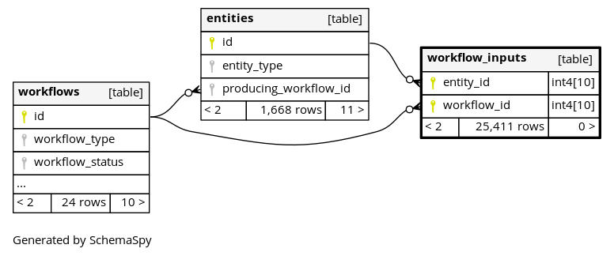
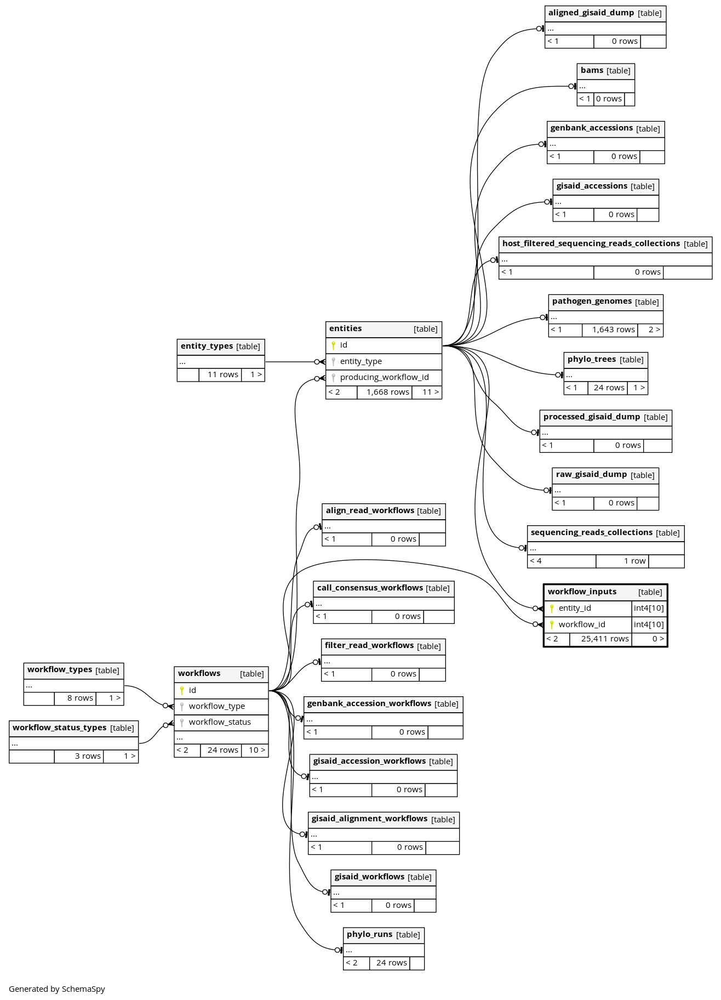

aspen_db
Database
Tables
(current)
Columns
Constraints
Relationships
Orphan Tables
Anomalies
Routines
workflow_inputs
25411
rows
Columns
Column
Type
Size
Nulls
Auto
Default
Children
Parents
Comments
entity_id
int4
10
null
entities
.id
fk_workflow_inputs_entity_id_entities
R
workflow_id
int4
10
null
workflows
.id
fk_workflow_inputs_workflow_id_workflows
R
Indexes
Constraint Name
Type
Sort
Column(s)
pk_workflow_inputs
Primary key
Asc
/
Asc
entity_id + workflow_id
Relationships
Close relationships within degrees of separation
One
Two degrees

